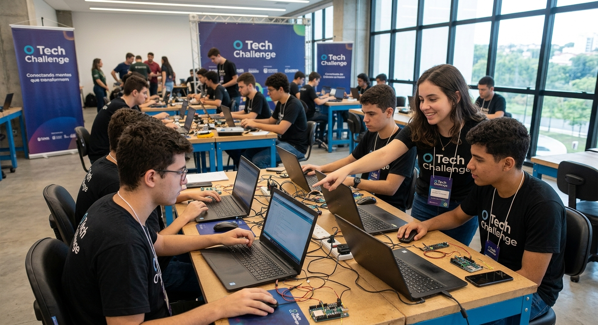
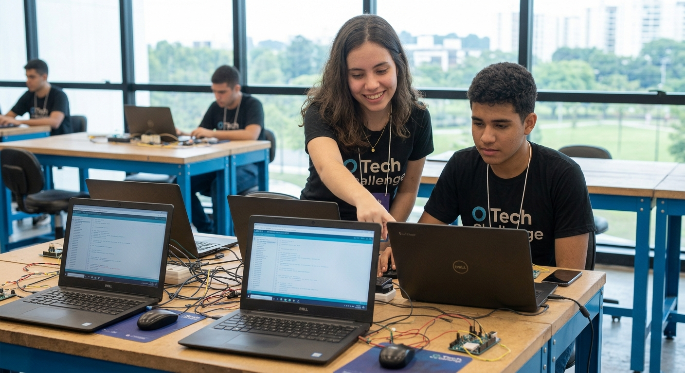

Competições
Feature Sprint
É uma maratona de ideação e prototipagem ultra-acelerada, desenhada para testar a capacidade de priorização,
colaboração e resolução rápida de problemas. Diferente dos formatos tradicionais de vários dias, esta
competição desafia os participantes a transformarem uma dor real de produto em um conceito validado e
prototipado no papel ou em alta velocidade, focando na entrega de valor imediato em tempo recorde.
Regras de participação
- Formação das Equipes: Os times devem ter exatamente de 2 a 3 integrantes, garantindo agilidade nas
tomadas de decisão sem gargalos de comunicação.
- Foco no Conceito e Prototipagem: Não haverá desenvolvimento de código. Os entregáveis devem ser
restritos a wireframes/esboços de telas (papel ou Figma) e à especificação rápida da funcionalidade.
- Gestão Rigorosa do Tempo: A competição possui duração cravada de 90 minutos, divididos estritamente
entre alinhamento (15 min), ideação/esboço (30 min), montagem da proposta (25 min) e apresentações
finais (20 min).
-
Proibição de Preparação Prévia: Todo o material deve ser produzido durante o evento; é proibido trazer
ideias, fluxos ou templates de UI previamente desenhados.
-
Entregáveis e Pitch Flash: Cada equipe deve entregar o fluxo visual da funcionalidade e realizar uma
apresentação (pitch) oral de no máximo 2 minutos para a banca avaliadora
- Critérios de Avaliação: A pontuação considerará a Clareza do Problema Resolvido, a Simplicidade e
Usabilidade da Solução, a Capacidade de Priorização (Escopo MVP) e a Qualidade da Apresentação.
Bug Hunt Express
É uma competição de testes de software ultra-acelerada, projetada para avaliar a capacidade analítica, a
atenção aos detalhes e o raciocínio crítico dos participantes sob extrema pressão de tempo. O objetivo é
varrer uma aplicação ou ambiente controlado em busca do maior número possível de falhas, vulnerabilidades ou
erros de usabilidade, exigindo documentação ágil e reportes precisos para garantir o maior impacto no menor
tempo.
Regras de participação
- Formato de Atuação: A participação pode ser individual ou em duplas, garantindo que o tempo de
alinhamento não comprometa a execução dos testes.
- Ambiente de Testes: As varreduras devem ser feitas exclusivamente no ambiente, URL ou compilação (build)
oficial fornecida pela organização no início da sessão.
- Critérios de Validação de Bugs: Apenas bugs reportados durante a janela de 90 minutos serão
considerados. Cada relatório deve conter: passos para reprodução, comportamento esperado, comportamento
obtido e evidência (print ou gravação).
- Classificação e Pontuação: Os achados serão pontuados por gravidade — Crítico (bloqueia o uso/falha
grave de segurança), Alto (quebra funcionalidade principal), Médio (falha secundária ou de fluxo) e
Baixo/Visual (pequenos erros de UI ou texto).
- Regra de Ineditismo: Em caso de bugs duplicados reportados por participantes diferentes, a pontuação
será atribuída exclusivamente a quem enviou o relatório primeiro (com base no timestamp do envio).
- Ferramentas Permitidas: É liberado o uso de ferramentas de inspeção do navegador, manipuladores de API
(como Postman) e gravadores de tela, sendo estritamente proibido o uso de ferramentas de ataque
automatizado (DDoS ou fuzzing agressivo) que desestabilizem o ambiente.


Imagens geradas por Inteligência Artificial
Oficinas
Oficina de Engenharia de Prompts Express
É um workshop prático e intensivo voltado para desenvolvedores que buscam otimizar o uso de LLMs no fluxo de
trabalho técnico, como geração de código, refatoração e automação de testes. O objetivo do encontro é
dominar técnicas avançadas de estruturação de comandos e context-stuffing sob restrição de tempo,
capacitando os participantes a transformarem modelos de linguagem em assistentes de desenvolvimento precisos
e eficientes.
Regras de participação
-
Formato de Trabalho: As atividades serão realizadas individualmente ou em duplas para garantir foco
total na escrita e ajuste rápido das instruções.
-
Ambiente e Ferramentas: Os participantes utilizarão os modelos e LLMs indicados no início da sessão
(como APIs, ChatGPT, Claude ou playgrounds dedicados), sendo obrigatório o registro do histórico de
tentativas.
-
Escopo do Desafio: Os exercícios práticos focarão exclusivamente em cenários reais de desenvolvimento,
como refatoração de código legado, criação de testes unitários automatizados, documentação técnica e
geração de regex/consultas SQL complexas.
-
Dinâmica das Rodadas: A oficina será dividida em blocos curtos: 20 minutos de teoria aplicada
(zero-shot, few-shot e chain-of-thought), 50 minutos de resolução de desafios técnicos graduais e 20
minutos de validação e refinamento em grupo.
- Critérios de Entrega: Cada solução enviada deve conter o prompt final utilizado, o código gerado pelo
modelo e a taxa de sucesso da execução (código sem erros e dentro das boas práticas impostas no
desafio).
- Avaliação da Eficiência: A pontuação das entregas levará em conta a Precisão do Resultado (código
funcional de primeira), a Clareza e Reusabilidade do Prompt e a Economia de Tokens/Iterações (resolver o
problema com o menor número de tentativas).
Oficina de UI/UX Express: Do Protótipo ao Componente
É um workshop prático focado em conectar o design de experiência de interface às boas práticas de construção
técnica no Figma. O objetivo é capacitar os participantes a transformarem rascunhos rápidos em componentes
reaproveitáveis, escaláveis e prontos para handoff, utilizando os recursos mais modernos da ferramenta para
otimizar o fluxo entre design e desenvolvimento.
Regras de participação
-
Requisitos Prévia: Todos os participantes devem utilizar uma conta ativa no Figma (via navegador ou
aplicativo desktop) e ter familiaridade básica com a navegação na ferramenta.
- Formato de Trabalho: A atividade é individual para garantir que cada participante coloque a mão na massa
e desenvolva autonomia na criação da sua própria Design Library expressa.
Escopo da Atividade: A oficina cobrirá o fluxo completo focado em um único elemento ou tela simples
(como uma interface de Login, Card de Produto ou Dashboard Compacto), garantindo a conclusão da ideia dentro
do prazo.
-
Dinâmica do Tempo (90 min): O evento será divido em 20 min de boas práticas (Auto Layout, Design Tokens
e Variáveis), 50 min de mão na massa (criação de telas e componentização) e 20 min de revisão técnica de
arquivos.
Diretrizes Técnicas de Entrega: O arquivo final deve obrigatoriamente aplicar Auto Layout, Variáveis de
Cores/Espaçamento e Variantes de Componentes (ex: estados de botão como default, hover e disabled).
-
Critérios de Validação: Os componentes criados serão avaliados pela Escalabilidade (se não quebram ao
redimensionar), Organização das Camadas (nomenclatura limpa), Consistência Visual (UI) e Prontidão para
Handoff (facilidade de leitura para devs).
A Oficina de Testes Unitários Express: Do Zero ao MOC
É um treinamento intensivo voltado para desenvolvedores que buscam elevar a qualidade do seu código através
do desenvolvimento guiado por testes. O objetivo é ensinar a criar suítes de testes automatizados
eficientes, isolando dependências e cobrindo cenários críticos de aplicação em um curto intervalo de tempo.
Regras de participação
- Formato Individual: O exercício é estritamente individual para garantir que o participante fixe os
conceitos de asserção, cobertura e simulação (mocking).
-
Linguagem e Stack: Os desafios serão propostos em uma linguagem padrão (como JavaScript/TypeScript com
Jest, ou Python com PyTest), com um projeto base já clonado e configurado no início da sessão.
-
Escopo do Desafio: Os participantes receberão regras de negócio sem testes e deverão implementar testes
para cenários com sucesso, exceções de erro e simulação de chamadas assíncronas a APIs externas.
-
Cronograma Executivo (90 min): Dividido em 20 min de fundos teóricos (padrão AAA: Arrange, Act, Assert),
50 min de escrita intensiva de testes e 20 min de análise do relatório de cobertura (coverage report).
-
Entregáveis Técnicos: Cada participante deve submeter a suíte de testes rodando sem falhas e alcançar um
índice mínimo fixado de 80% de cobertura de código no projeto fornecido.
Critérios de Avaliação: A validação considerará a Independência dos Testes (não dependerem de ordem de
execução), Uso Correito de Mocks/Stubs, Clareza nos Nomes dos Testes e a Taxa de Cobertura de Caminhos
Críticos.
Oficina de Git & GitHub Express: Da Branch ao Pull Request
É um workshop 100% prático focado em dominar os fluxos essenciais de controle de versão e colaboração de
código. O objetivo é capacitar os participantes a lidarem com resolução de conflitos, organização de
histórico e boas práticas de integração contínua sem medo, simulando um ambiente real de equipe sob
restrição de tempo.
Regras de participação
- Pré-requisitos e Ambiente: Os participantes devem ter o Git instalado localmente, uma conta ativa no
GitHub e um editor de código (como VS Code) previamente configurado.
- Formato em Pares: A dinâmica será realizada em duplas para simular cenários reais de simulação de
revisão de código e aprovação de alterações via pares.
- Escopo Prático: A atividade foca na criação de um fluxo de trabalho completo (Gitflow/GitHub Flow):
criação de feature branches, commits semânticos, abertura de Pull Request e resolução manual de merge
conflicts.
- Estrutura do Tempo (90 min): A sessão se divide em 15 min de alinhamento sobre comandos e boas práticas,
50 min de simulação técnica de conflito e colaboração, e 25 min de revisão de código e feedback.
- Requisitos do Repositório: O repositório final deve conter um histórico de commits limpo, mensagens
padronizadas (padrão Conventional Commits) e pelo menos um Pull Request aprovado e mesclado sem quebrar
a branch principal.